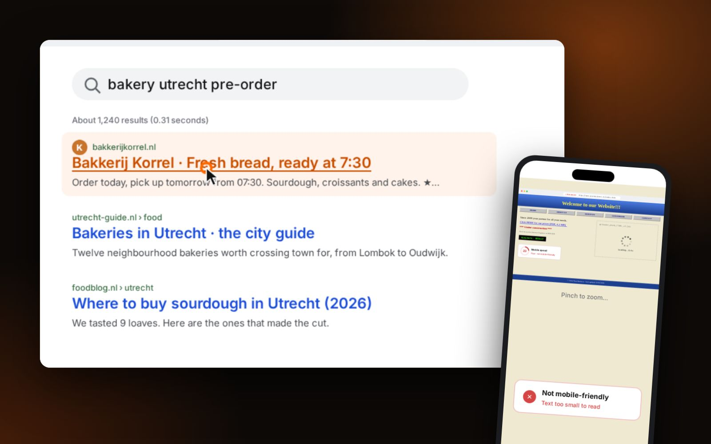

Most people in the Netherlands speak English well. So if you run a business here and you are more comfortable in English, is an English-only website fine? Sometimes yes. Often a Dutch version brings in customers the English one never reaches.
Start with your customers
- Dutch consumers (salons, restaurants, trades, local services): they can read English, but they search, compare and buy in Dutch. A Dutch site feels local and trustworthy.
- Internationals and expats in the Netherlands: English is the natural choice, and an English-speaking provider is often exactly what they are looking for.
- Businesses and customers abroad: English works across borders.
- A mix: two languages.
English-only works when…
- your customers are internationals or expats
- you sell to businesses or abroad
- people find you by name or referral
Add Dutch when…
- you serve local consumers
- people search for your service in Dutch
- trust and familiarity matter in the sale
Then look at what people search
Google shows results in the language of the search. Someone typing “kapper Utrecht” or “website laten maken” will mostly see Dutch pages. An English page about the same service will rarely appear for that search, however good it is. If the searches that matter for your business are Dutch, you need Dutch pages to be found for them.

If you choose two languages, do it properly
- One language per page. Put Dutch and English on separate URLs, for example
/and/en/. A page that contains both languages, or switches with a script, is confusing for search engines. - Link the versions with hreflang, so Google shows the Dutch page to Dutch searchers and the English page to English searchers.
- A clear language switch that keeps the visitor on the same page.
- Translate for people, not word for word. Dutch and English customers may ask different questions; the content can differ where that helps.
- Keep both up to date. A Dutch page with old prices next to an updated English page costs trust.
Translate for people, not word for word.
A practical approach
- Write the pages for your main market first, in the language they search in.
- Add the second language for the pages that matter most: home, services, prices, contact.
- Look at Google Search Console after a few months to see which language brings visitors and enquiries.
What it costs
At Ace 360, a second language is an option of about €275 to €350 on top of a website, for setting up the structure and both versions of each page. Translation or copywriting can be added if you need it. This site works the same way: Dutch at /, English at /en/. See web design in the Netherlands, in English.